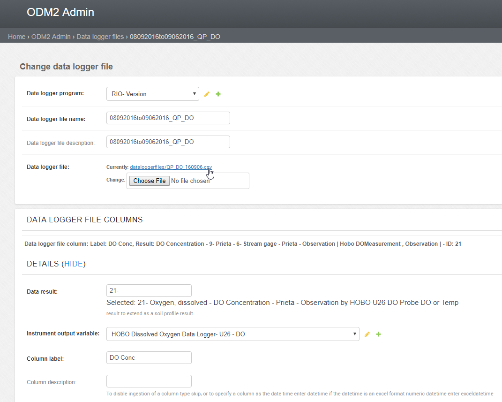
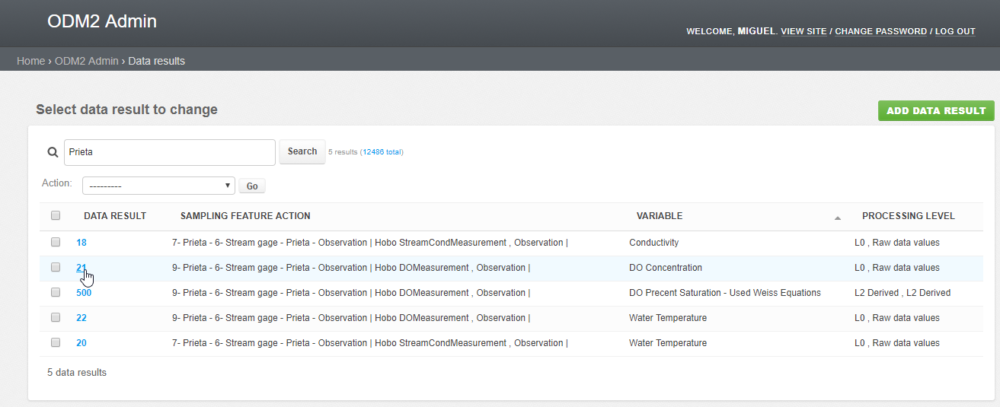
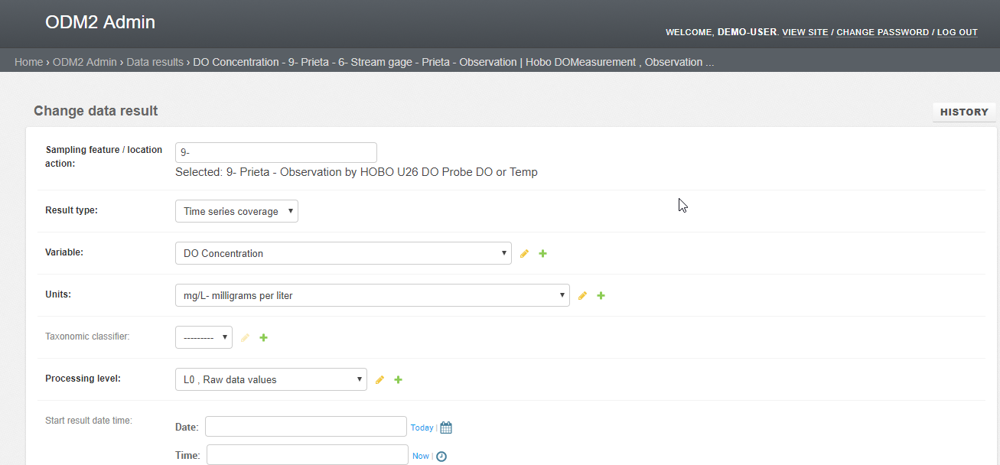

Data Logger Files¶
Ingesting data by uploading and processing data logger files is a key feature of ODM2 Admin. While logged into the ODM2 Sandbox you can navigate to https://dev-odm2admin.cuahsi.org/Sandbox/odm2admin/dataloggerfiles/
Select the first data logger file ending in QP_DO https://dev-odm2admin.cuahsi.org/Sandbox/odm2admin/dataloggerfiles/133/change/
Download and open the file, we can see that the file has 3 columns, Date Time GMT-04:00, DO Conc, and Temp the data logger file model correspondingly also has 3 data logger file columns.
Click SHOW on the first data logger file column, this data logger file column has a data result, an insturment output variable and a Column label. The column label must match a column label in the file for the data logger file to be ingested. The data logger file column also has a recording interval and a recording interval units as well as an aggregation statistic.
The Data result contains much of the information about how our time series is configured. Go to the data results page (https://dev-odm2admin.cuahsi.org/Sandbox/odm2admin/results/) to find our result. If we search for Prieta, the name of the site, we will find our data result as in the below image.
Now select the data result, with the variable DO Concentration and ID 21 (https://dev-odm2admin.cuahsi.org/Sandbox/odm2admin/results/21/change/).
We can see that here the sampling feature / location action is defined, the Result type (time series coverage), The variable, units, processing level, as well as other fields many of them optional. We also see Time Series Results, Measurement Results and Profile Results. Because this data result defines a time series it needs to have an associated time series result.
We can click the + icon to add a variable, unit processing level or other field, we can click the pencil icon to edit the current item.
The Sensor dashboard:¶
We have a dashboard view of sensors which can also be configured in the settings files.
Here is an example dashboard for DryCreek Experimental Watershed.
http://odm2admin.cuahsi.org/DryCreek/sensordashboard/featureaction=20/